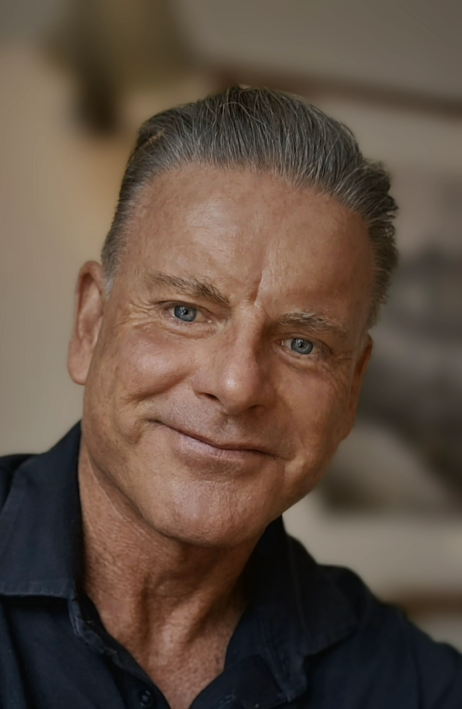

A practical, data-led approach to improving the things that make AGING visible and measurable: body composition, fitness, blood markers and vital signs.

Lee C. Stonehouse built AGING? F***THAT! around a simple premise: don't guess about AGING. Measure what can change, intervene intelligently, then measure again.
The approach combines exercise, nutrition, recovery, body composition and biomarker tracking into one repeatable framework.

The AFT Bio Age calculation uses 12 selected modifiable markers across four domains. This public view shows the framework only — client measurements and personal dashboards are not published here.
AFT Bio Age is a program tracking model, not an epigenetic clock, validated clinical AGING clock or medical diagnosis. Missing measurements are excluded and available weights re-normalised.

Ten practical steps for people who want the second half of life to perform differently from the first.
As an Amazon Associate, I earn from qualifying purchases.
Age reversal isn't only about adding healthier years to your own life. It's about being there — stronger, healthier and capable — for your children and, one day, their children. Perhaps the most valuable legacy you can leave them is not simply what you give them, but the example you set for how to live.
For program enquiries, start a conversation with Lee.